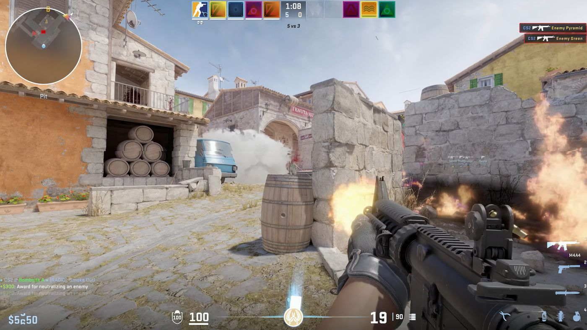
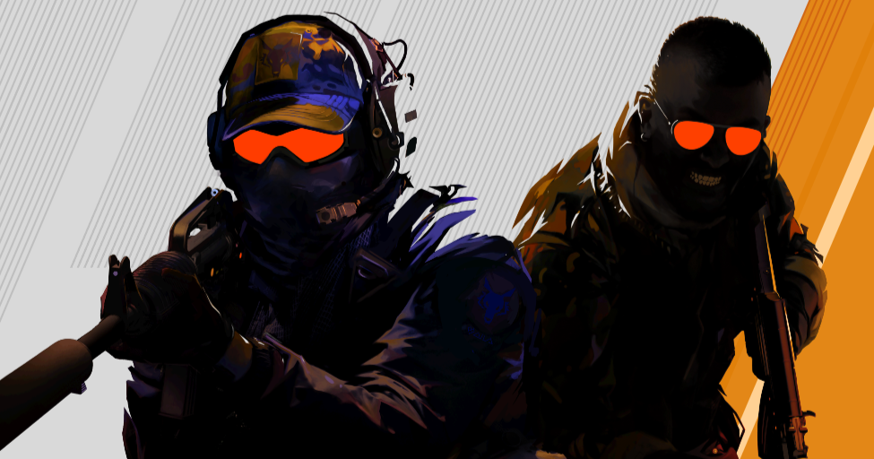

Counter-Strike 2 is a 2023 free-to-play tactical first-person shooter game developed and published by Valve. It is the fifth entry in the Counter-Strike series, developed as an updated version of the previous entry, Counter-Strike: Global Offensive (2012). The game was announced on March 22, 2023, and was released on September 27, 2023, for Windows and Linux, replacing Global Offensive on Steam. Like its predecessor, the game pits two teams, the Counter-Terrorists and the Terrorists, against each other in various objective-based game modes; additional game modes that stray away from this setup are also included. Counter-Strike 2 features major technical improvements over Global Offensive, including a move from the Source game engine to Source 2, improved graphics, and a new "sub-tick" server architecture. In addition, many maps from Global Offensive were updated to take advantage of the features of Source 2, with some maps receiving complete overhauls.
 Upon release, Counter-Strike 2 received generally favorable reviews from critics, with praise for its gunplay and overhauled maps. In contrast, player reception was mixed, and the game received thousands of negative user reviews on Steam, becoming one of the lowest-rated Valve titles on the platform; criticism was directed at the game's performance, the removal of several features that had been present in Global Offensive, and the discontinuation of support for the macOS operating system, which was supported by Global Offensive.